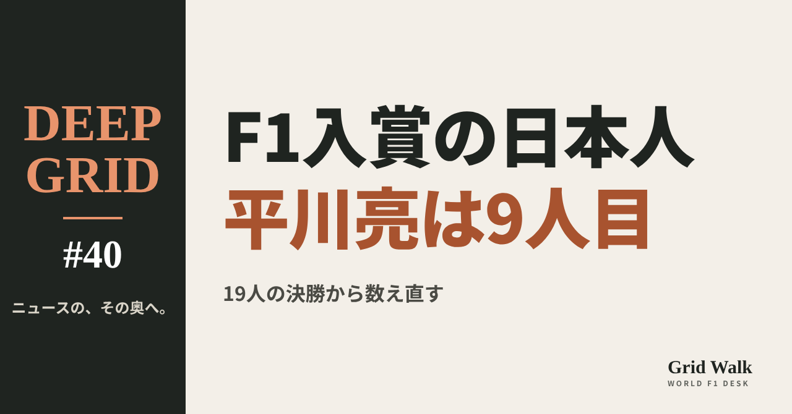
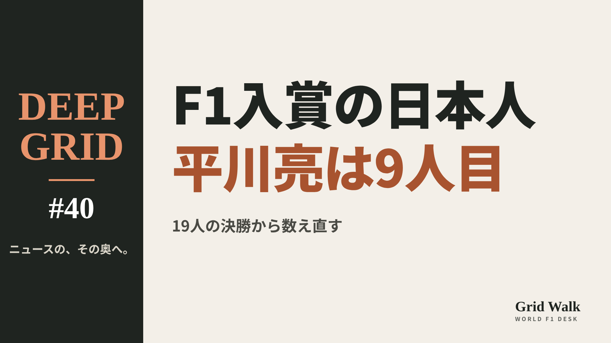

<meta charset="utf-8"><title>DEEP GRID #40 note貼り付け</title>
<style>
/* one column of numbered paste steps; text steps vs image steps differ by marker */
:root{--bg:#F5F4F0;--card:#FFFFFF;--ink:#1D2321;--mute:#5F665F;--line:#DCDAD2;--btn:#1F5FBF;--btnok:#2E8B4F;--img:#E9F3EC;--imgink:#22663B;--sans:'IBM Plex Sans JP','Hiragino Sans','Noto Sans JP',sans-serif}
@media (prefers-color-scheme:dark){:root:not([data-theme="light"]){--bg:#171A19;--card:#202423;--ink:#ECEDE8;--mute:#A3AAA2;--line:#343937;--btn:#4D8BE6;--btnok:#3FA866;--img:#1E2C23;--imgink:#8FD3A6;color-scheme:dark}}
:root[data-theme="dark"]{--bg:#171A19;--card:#202423;--ink:#ECEDE8;--mute:#A3AAA2;--line:#343937;--btn:#4D8BE6;--btnok:#3FA866;--img:#1E2C23;--imgink:#8FD3A6;color-scheme:dark}
body{background:var(--bg);color:var(--ink);font-family:var(--sans);font-size:15px;line-height:1.75;padding:20px 16px 60px}
main{max-width:680px;margin:0 auto;display:grid;gap:28px}
header h1{font-size:22px;margin:0 0 6px;text-wrap:balance}
header p{margin:0;color:var(--mute);font-size:14px}
nav{display:flex;gap:8px;flex-wrap:wrap;margin-top:12px}
nav a{border:1px solid var(--line);border-radius:999px;padding:4px 14px;color:var(--ink);text-decoration:none;font-size:14px;background:var(--card)}
.part h2{font-size:18px;line-height:1.5;margin:0 0 12px;text-wrap:balance;display:flex;gap:10px;align-items:baseline;flex-wrap:wrap}
.tag{font-size:13px;background:var(--ink);color:var(--bg);border-radius:6px;padding:1px 9px}
.steps{list-style:none;margin:0;padding:0;display:grid;gap:12px}
.st{background:var(--card);border:1px solid var(--line);border-radius:12px;padding:12px;min-width:0}
.hd{display:flex;align-items:center;gap:8px;margin-bottom:8px}
.no{width:26px;height:26px;border-radius:50%;background:var(--btn);color:#fff;display:inline-flex;align-items:center;justify-content:center;font-size:13px;font-weight:700;flex:0 0 26px}
.im .no{background:var(--btnok)}
.hd em{font-style:normal;font-size:12px;background:var(--img);color:var(--imgink);border-radius:6px;padding:0 8px}
.bx{font-size:13.5px;line-height:1.7;border:1px solid var(--line);border-radius:8px;padding:8px 10px;max-height:110px;overflow:auto;overflow-wrap:anywhere}
.bx.tall{max-height:150px}.bx p{margin:0 0 6px}.bx h2{font-size:14px;margin:8px 0 4px}.bx a{color:var(--btn)}
.st img{display:block;width:100%;max-width:100%;border:1px solid var(--line);border-radius:8px}
.sub{font-size:12.5px;color:var(--mute);margin:6px 0 0}
.cp{width:100%;margin-top:8px;padding:12px;border:0;border-radius:10px;background:var(--btn);color:#fff;font:600 15px var(--sans);cursor:pointer}
.cp.ok{background:var(--btnok)}.cp.dl{background:var(--btnok)}.cp:focus-visible{outline:3px solid var(--ink);outline-offset:2px}
.xh{font-size:15px;margin:20px 0 10px}
.fb{font-size:13px;line-height:1.7;margin:8px 0 0;padding:8px 10px;border-radius:8px;background:var(--img);color:var(--imgink)}
.opts{display:grid;grid-template-columns:repeat(auto-fill,minmax(240px,1fr));gap:10px}
.opt{min-width:0}.opt img{display:block;width:100%;border:1px solid var(--line);border-radius:8px}
.ol{display:flex;align-items:center;gap:8px;margin-top:6px}.ol b{font-size:13px;flex:0 0 auto}.ol .on{font-size:12.5px;color:var(--mute);flex:1;min-width:0}.ol .cp{width:auto;flex:0 0 auto;padding:9px 14px}.ol .cp{margin:0;padding:9px}
.toast{font-size:13px;color:var(--mute);margin-top:6px}
</style>
<main><header><h1>DEEP GRID #40 note貼り付け</h1><p>1本あります。青い番号は文章、緑は画像です。</p><nav><a href="#p1">#40</a></nav></header><section class="part" id="p1"><h2><span class="tag">DEEP GRID #40</span>F1で入賞した日本人は何人いるのか　平川亮の1点を、19人の決勝から数え直す【DEEP GRID #40】</h2><ol class="steps">
<li class="st im"><div class="hd"><span class="no">1</span><b>見出し画像</b><em>画像</em></div><button class="cp dl" data-img="img/japanese-points-scorers.png" data-name="deep-japanese-points-scorers_見出し画像.png">ダウンロード</button></li>
<li class="st"><div class="hd"><span class="no">2</span><b>タイトル</b></div><div class="bx" id="p1t">F1で入賞した日本人は何人いるのか　平川亮の1点を、19人の決勝から数え直す【DEEP GRID #40】</div><button class="cp" data-plain="p1t">タイトルをコピー</button></li>
<li class="st"><div class="hd"><span class="no">3</span><b>本文</b></div><div class="bx tall" id="p1r"><p>メキシコシティGPで平川亮が取った1点は、F1で入賞した日本人として何人目なのか。F1の決勝に出た日本人19人の結果を、F1公式の結果ページなどで一人ずつ確かめた。答えは9人目。デビュー戦での入賞は、角田裕毅に続いて2人目になる。ただ、「入賞」の線は、日本人が決勝を走り始めた1976年からだけでも、6位、8位、10位と動いてきた。数字の裏にあるその違いも読む。</p><p>データの表と、出典46件はサイトで → <a href="https://f1gridwalk.github.io/deep/japanese-points-scorers/?utm_source=note&amp;utm_campaign=japanese-points-scorers">https://f1gridwalk.github.io/deep/japanese-points-scorers/?utm_source=note&amp;utm_campaign=japanese-points-scorers</a></p><h2>先に結論</h2><p>① 平川亮は2026年のメキシコシティGPを13位でゴールし、レース後に前でゴールした3人へペナルティが出て、正式結果は10位・1点になった（FIAの正式結果、RaceFans）。F1の決勝に出た日本人19人の結果を一人ずつ確かめると、F1で入賞した日本人は、平川で9人目になる。</p><p>② F1公式サイトは2021年、角田裕毅を「F1で入賞した8人目の日本人」と書いた。編集部の数えも同じで、中嶋悟、鈴木亜久里、片山右京、中野信治、佐藤琢磨、中嶋一貴、小林可夢偉、角田の8人。F1公式の数えと合っている。</p><p>③ デビュー戦で入賞した日本人は、角田（2021年バーレーンGP、9位）と平川の2人だけだ。残りの17人は、最初の決勝で点を取っていない。</p><p>④ ただし、点がもらえる順位は時代で違う。The Race によると、2002年までは6位まで、2003〜09年は8位まで、2010年からは10位まで。この号で開いたF1公式の結果ページ（1976〜2021年）も、これと合っている（2026年の平川の10位・1点はFIAの正式結果）。いまの「10位まで」で数え直すと、高原敬武、高橋国光、中嶋悟、中野信治、中嶋一貴、小林可夢偉の6人も、デビュー戦で点を取っていたことになる（編集部の計算）。</p><p>⑤ F1公式は角田を「デビュー戦で入賞した65人目」とも書いた。平川が全ドライバーで何人目にあたるかは、確かめられる資料が見つからなかったので、この号では書かない。</p><p><strong>日本人ドライバーの入賞で、いちばん心に残っているのはどのレースですか？</strong></p><h2>続きは F1 Grid Walk で</h2><p>ここから先の「平川の1点は、どう決まったのか」「19人を一人ずつ確かめる」「デビュー戦で入賞したのは、角田と平川だけ」「入賞の線が動くと、記録の見え方も変わる」は、サイトで読めます。F1の決勝に出た日本人19人と、入賞の記録、点が付いた最後の順位（F1公式の結果ページで確かめた年）、もし「10位まで」だったら（デビュー戦）の表も載せています。</p><p><strong>DEEP GRID #40「F1で入賞した日本人は何人いるのか　平川亮の1点を、19人の決勝から数え直す」</strong></p><p><a href="https://f1gridwalk.github.io/deep/japanese-points-scorers/">https://f1gridwalk.github.io/deep/japanese-points-scorers/</a></p><p>━━━━━━━━━━</p><p><strong>F1 Grid Walk では、世界のF1ニュースを毎日日本語でまとめています。</strong></p><p>海外の記事の要約を、毎日載せています。</p><p>ほかの海外記事も読みたい方は、F1 Grid Walkへ。</p><p><a href="https://f1gridwalk.github.io/">https://f1gridwalk.github.io/</a></p><p>━━━━━━━━━━</p><p><a href="https://www.formula1.com/en/latest/article/tsunoda-only-50-per-cent-happy-with-debut-race-despite-securing-p9-with-last.4ySzTJWezC5fhKdj1Z0FpL">出典：F1公式サイト</a></p><p><a href="https://www.formula1.com/en/latest/article/the-7-japanese-point-scorers-f1-rookie-yuki-tsunoda-is-looking-to-emulate.7uv8KkZzpLRiYPndIrN7fF">出典：F1公式サイト</a></p><p><a href="https://www.racefans.net/2026/11/02/hirakawa-scores-points-on-his-f1-debut-after-both-alpine-drivers-penalised/">出典：RaceFans</a></p><p><a href="https://www.fia.com/system/files/decision-document/2026_mexico_city_grand_prix_-_final_race_classification.pdf">出典：FIA</a></p><p><a href="https://www.the-race.com/formula-1/every-japanese-formula-1-driver-ranked/">出典：The Race</a></p><p><a href="https://www.the-race.com/formula-1/f1-points-system-explained-how-it-works/">出典：The Race</a></p><p><a href="https://www.formula1.com/en/results/1987/races">出典：F1公式サイト（結果）</a></p><p><a href="https://racingnews365.com/drivers/aguri-suzuki/results/1990">出典：RacingNews365</a></p><p><a href="https://www.pirelli.com/global/en-ww/race/racingspot/formula-1/from-fushida-to-tsunoda-japan-s-long-journey-in-formula-1-162117/">出典：ピレリ</a></p><p><a href="https://www.as-web.jp/f1/682284">出典：autosport web</a></p><p><a href="https://www.formula1.com/en/results/1977/races/373/south-africa/race-result">出典：F1公式サイト（結果）</a></p><p><a href="https://www.formula1.com/en/results.html/1977/races/390/japan/race-result.html">出典：F1公式サイト（結果）</a></p><p><a href="https://www.formula1.com/en/results.html/1987/races/5/brazil/race-result.html">出典：F1公式サイト（結果）</a></p><p><a href="https://www.formula1.com/en/results.html/1987/races/6/san-marino/race-result.html">出典：F1公式サイト（結果）</a></p><p><a href="https://www.formula1.com/en/results.html/1988/races/541/japan/race-result.html">出典：F1公式サイト（結果）</a></p><p><a href="https://www.formula1.com/en/results.html/1990/races/71/great-britain/race-result.html">出典：F1公式サイト（結果）</a></p><p><a href="https://www.formula1.com/en/results.html/1992/races/2/south-africa/race-result.html">出典：F1公式サイト（結果）</a></p><p><a href="https://www.formula1.com/en/results.html/1993/races/603/japan/race-result.html">出典：F1公式サイト（結果）</a></p><p><a href="https://www.formula1.com/en/results.html/1994/races/605/brazil/race-result.html">出典：F1公式サイト（結果）</a></p><p><a href="https://www.formula1.com/en/results.html/1994/races/618/europe/race-result.html">出典：F1公式サイト（結果）</a></p><p><a href="https://www.formula1.com/en/results/1994/races/619/japan/race-result">出典：F1公式サイト（結果）</a></p><p><a href="https://www.formula1.com/en/results.html/1997/races/654/australia/race-result.html">出典：F1公式サイト（結果）</a></p><p><a href="https://www.formula1.com/en/results.html/1997/races/660/canada/race-result.html">出典：F1公式サイト（結果）</a></p><p><a href="https://www.formula1.com/en/results/1997/races/671/japan/race-result">出典：F1公式サイト（結果）</a></p><p><a href="https://www.formula1.com/en/results.html/2002/races/720/australia/race-result.html">出典：F1公式サイト（結果）</a></p><p><a href="https://www.formula1.com/en/results.html/2002/races/736/japan/race-result.html">出典：F1公式サイト（結果）</a></p><p><a href="https://www.formula1.com/en/results.html/2006/races/790/bahrain/race-result.html">出典：F1公式サイト（結果）</a></p><p><a href="https://www.formula1.com/en/results.html/2006/races/801/germany/race-result.html">出典：F1公式サイト（結果）</a></p><p><a href="https://formula1.com/en/results/2006/drivers/YUJIDE01/yuji-ide">出典：F1公式サイト（結果）</a></p><p><a href="https://www.formula1.com/en/results.html/2007/races/824/brazil/race-result.html">出典：F1公式サイト（結果）</a></p><p><a href="https://www.formula1.com/en/results.html/2008/races/825/australia/race-result.html">出典：F1公式サイト（結果）</a></p><p><a href="https://www.formula1.com/en/results.html/2009/races/858/brazil/race-result.html">出典：F1公式サイト（結果）</a></p><p><a href="https://www.formula1.com/en/results.html/2009/races/859/abu-dhabi/race-result.html">出典：F1公式サイト（結果）</a></p><p><a href="https://www.formula1.com/en/results.html/2020/races/1064/bahrain/race-result.html">出典：F1公式サイト（結果）</a></p><p><a href="https://fiaresultsandstatistics.motorsportstats.com/drivers/masahiro-hasemi/series/fia-formula-one-world-championship">出典：FIA公式統計（motorsportstats）</a></p><p><a href="https://www.motorsportstats.com/driver/taki-inoue/summary/series/fia-formula-one-world-championship">出典：motorsportstats</a></p><p><a href="https://motorsportstats.com/driver/sakon-yamamoto/summary/series/fia-formula-one-world-championship">出典：motorsportstats</a></p><p><a href="https://fiaresultsandstatistics.motorsportstats.com/drivers/sakon-yamamoto/season/2006">出典：FIA公式統計（motorsportstats）</a></p><p><a href="https://racingnews365.com/drivers/noritake-takahara/statistics">出典：RacingNews365</a></p><p><a href="https://racingnews365.com/drivers/kazuyoshi-hoshino/statistics">出典：RacingNews365</a></p><p><a href="https://racingnews365.com/drivers/kunimitsu-takahashi/statistics">出典：RacingNews365</a></p><p><a href="https://racingnews365.com/drivers/aguri-suzuki/results/1988">出典：RacingNews365</a></p><p><a href="https://racingnews365.com/drivers/ukyo-katayama/statistics">出典：RacingNews365</a></p><p><a href="https://racingnews365.com/drivers/toshio-suzuki/results/1993">出典：RacingNews365</a></p><p><a href="https://racingnews365.com/drivers/hideki-noda/results/1994">出典：RacingNews365</a></p><p><a href="https://racingnews365.com/drivers/toranosuke-takagi">出典：RacingNews365</a></p></div><button class="cp" data-rich="p1r">本文をコピー</button></li>
<li class="st"><div class="hd"><span class="no">4</span><b>ハッシュタグ</b></div><div class="bx" id="p1h">#F1 #F1jp #平川亮 #角田裕毅 #日本人ドライバー #F1記録 #DEEPGRID</div><button class="cp" data-plain="p1h">タグをコピー</button></li>
</ol><h3 class="xh">X</h3><ol class="steps">
<li class="st im"><div class="hd"><b>X用の画像</b><em>画像</em></div><button class="cp dl" data-img="img/x_japanese-points-scorers.png" data-name="x_deep-japanese-points-scorers.png">ダウンロード</button></li>
<li class="st"><div class="hd"><b>① noteをシェアするときの文</b></div><div class="bx" id="p1x0">F1の決勝を走った日本人は19人。そのうち入賞したのは9人で、平川亮は9人目。デビュー戦で入賞したのは角田と平川だけです。一人ずつ数え直したDEEP GRID #40をnoteにまとめました #F1jp #平川亮</div><button class="cp" data-plain="p1x0">コピー</button></li>
<li class="st"><div class="hd"><b>② ①への返信</b></div><div class="bx" id="p1x1">ほかの海外記事も読みたい方は、F1 Grid Walkへ。
https://f1gridwalk.github.io/deep/japanese-points-scorers/?utm_source=x&amp;utm_campaign=japanese-points-scorers</div><button class="cp" data-plain="p1x1">コピー</button></li>
<li class="st"><div class="hd"><b>③ ②への返信</b></div><div class="bx" id="p1x2">毎日の海外F1ニュースは、日本語でこちらにまとめています。
https://f1gridwalk.github.io/</div><button class="cp" data-plain="p1x2">コピー</button></li>
</ol></section></main><script>
function done(b,msg){const t=b.dataset.t||b.textContent;b.dataset.t=t;b.classList.add('ok');b.textContent=msg||'コピーしました';setTimeout(()=>{b.classList.remove('ok');b.textContent=t},2000)}
function selectEl(el){const r=document.createRange();r.selectNodeContents(el);const s=getSelection();s.removeAllRanges();s.addRange(r)}
async function rich(el,b){
  try{await navigator.clipboard.write([new ClipboardItem({'text/html':new Blob([el.innerHTML],{type:'text/html'}),'text/plain':new Blob([el.innerText],{type:'text/plain'})})]);done(b);return}catch(e){}
  selectEl(el);let ok=false;try{ok=document.execCommand('copy')}catch(e){}
  if(ok){getSelection().removeAllRanges();done(b)}else{done(b,'選択しました。コピーしてください')}}
async function plain(el,b){
  try{await navigator.clipboard.writeText(el.innerText);done(b);return}catch(e){}
  selectEl(el);let ok=false;try{ok=document.execCommand('copy')}catch(e){}
  if(ok){getSelection().removeAllRanges();done(b)}else{done(b,'選択しました。コピーしてください')}}
let dlns=null;(async()=>{try{dlns=await window.claude?.use?.("downloads")}catch(e){dlns=null}})();
async function img(src,b){
  b.dataset.t=b.dataset.t||b.textContent;
  if(!dlns){try{dlns=await window.claude?.use?.("downloads")}catch(e){}}
  if(!dlns){b.textContent='ダウンロードできませんでした';setTimeout(()=>{b.textContent=b.dataset.t},3500);return}
  try{const blob=await fetch(src).then(r=>r.blob());b.textContent='保存の確認を開いています…';
    await dlns.save({filename:b.dataset.name,data:blob});done(b,'ダウンロードしました')}
  catch(e){const c=e&&e.code;b.textContent=c==='declined'?'キャンセルしました':c==='rate_limited'?'少し待ってからもう一度押してください':'ダウンロードできませんでした';setTimeout(()=>{b.textContent=b.dataset.t},3500)}}
document.querySelectorAll('.cp').forEach(b=>b.addEventListener('click',()=>{
  if(b.dataset.rich)rich(document.getElementById(b.dataset.rich),b);
  else if(b.dataset.plain)plain(document.getElementById(b.dataset.plain),b);
  else img(b.dataset.img,b)}));
</script>